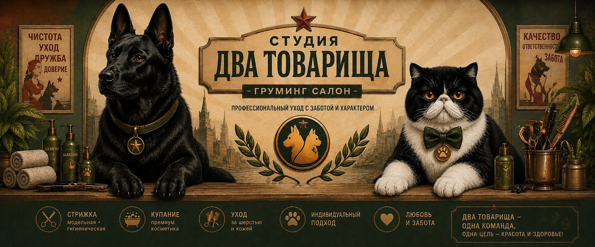

Curat. Îngrijit. Cu drag.
Toate procedurile sunt incluse — fără costuri suplimentare pentru gheare, urechi și scăldat.
Baie cu produse cosmetice profesionale, freză igienică (sub coadă, în zona axilelor, pe partea interioară a labelor), freză generală, tăierea ghearelor pînă la o lungime confortabilă, curățarea urechiușelor.
Totul este inclus.Periaj uscat, baie cu produse cosmetice speciale pentru năpîrlire, mască, după caz, uscarea și îndepărtarea părului năpîrlit cu ajutorul unui booster, conturarea siluetei cu foarfeca (dacă este necesar în funcție de rasă), scurtare ghearelor și curățarea urechilor.
Totul este inclus.Stripping standard conform rasei, baie cu produse cosmetice speciale și măști, ajustare cu foarfeca, scurtare ghearelor și curățarea urechilor.
Pentru cîinii cu păr aspru.Scăldatul animalului de companie, tăierea ghearelor pînă la o lungime confortabilă și curățarea urechilor. Îngrijire de bază fără freză.
Deplasarea groomerilor la domiciliu — serviciu disponibil doar pentru anumite tipuri de servicii de grooming și pentru categoriile beneficiare (concretizați în messenger).
Pe bază de programare.Preluăm animalul de companie pentru grooming și îl aducem înapoi acasă. Costul se calculează individual, în funcție de distanță.
Dus-întors.Prețurile sunt stabilite, iar rîndul merge rapid!
* Pentru rasele nordice — în funcție de etapa năpîrlirii și starea blănii.
Expres-năpîrlire pentru pisici: periaj, scăldat, măști, booster, conturare, gheare și urechi. Freză „leu” — în lipsa contraindicațiilor.
Transparent, cu grijă și respect
De la cîini de talie mică pînă la cîini de serviciu. Abordare individuală — chiar și atunci cînd caracterul este complicat.
Alegem metoda de grooming în funcție de comportamentul animalului. Lucrăm și cu animale capricioase sau anxioase și încercăm să găsim o abordare potrivită în orice situație.
Reduceri pentru pensionari și categorii beneficiare — pe bază de înțelegere.
La programare, stăpînul este obligat să informeze despre:
NU folosim preparate sedative. Groomingul cu sedare este posibil doar într-o clinică veterinară, cu un specialist autorizat. În cazurile dificile — recomandăm consultarea unui medic veterinar.
Nu efectuăm tratamente antiparazitare. În cazul depistării paraziților — informăm stăpînul și oferim recomandări. Reprogramarea este posibilă după efectuarea tratamentului.
Livrarea se calculează individual, în funcție de distanță. Deplasarea la domiciliu — doar în cazuri excepționale: vîrstă, dizabilitate, lipsa transportului etc. Concretizați în messenger.
Toate condițiile și ora programării se discută în prealabil. Ne rezervăm dreptul de a refuza serviciul în cazul în care există un risc pentru animal sau groomer. Responsabilitatea pentru informațiile despre animal îi revine stăpînului.
Curat. Frumos. Cu drag!
FormatLucrăm doar cu programare prealabilă. Primirea animalelor — în studio, fără prezența stăpînului. Adresa — concretizați în messenger.
Apăsați butonul de mai jos — vă răspundem pe WhatsApp / Viber.
Ce trebuie să comunicați la programare: rasa, vîrsta, boli/traumatisme, comportamentul, experiența anterioară de grooming, sterilizare/castrare.
«Curat. Frumos. Cu drag!»